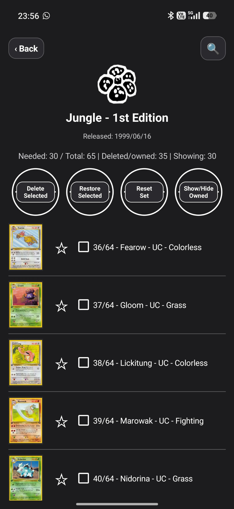
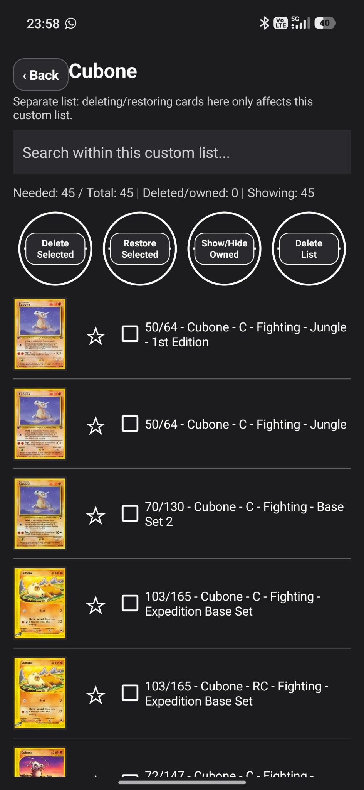

Pokémon TCG set companion
Know what you still need.
MissingNo TCG Tracker helps collectors focus on the cards missing from their collection, track set progress, browse sets, manage custom lists, and stay organised across the Pokémon Trading Card Game.


Built for collectors completing sets
Track missing cards
Mark cards as collected and keep a clear view of what remains in each set.
Set progress at a glance
Browse organised eras and see completion counts and percentages quickly.
Custom lists and stats
Create focused lists and review overall progress with built-in statistics.
Real app screenshots
These screenshots show the actual app interface so users know what to expect.



Disclaimer: MissingNo TCG Tracker is an unofficial companion app. It is not affiliated with, endorsed by, or sponsored by Nintendo, Creatures Inc., GAME FREAK, or The Pokémon Company.